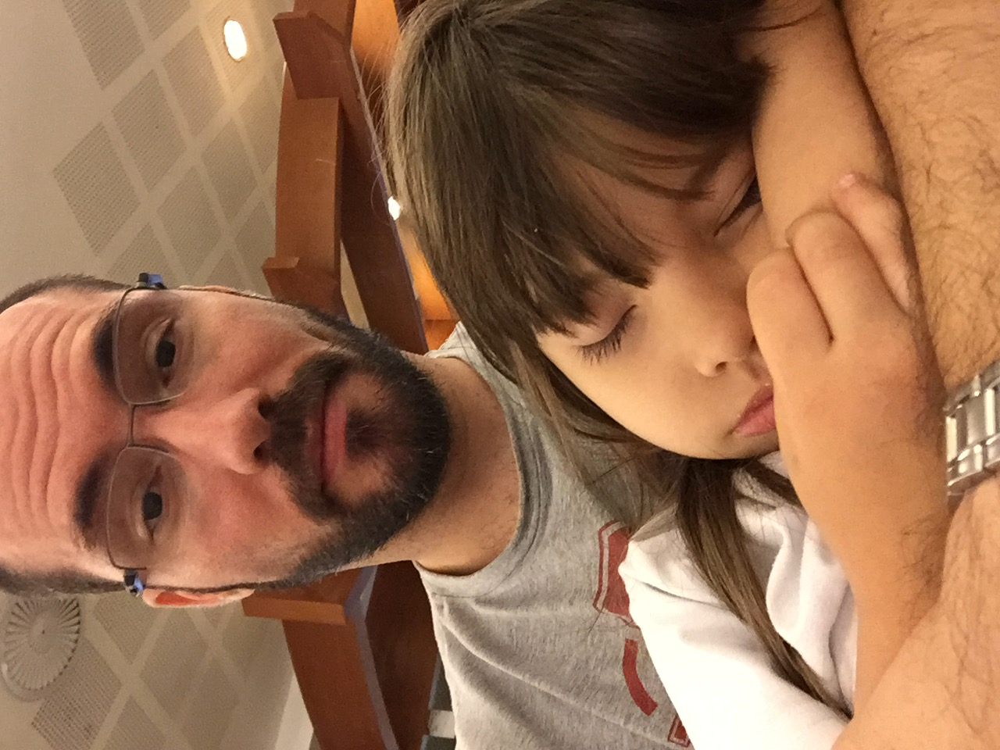

Desenvolvedor Especialista / Lider Técnico
manoel.jr@sememail.com | (11) 99999-1234 | Belo Horizonte, MG
Com 30 anos de experiência no mercado de tecnologia, alguns desses atuando como lider técnico especializado em soluções de software robustas e escaláveis. Ao longo da minha trajetória, participei de projetos de alta complexidade em diversas áreas como finanças, saúde, indústria e tecnologia e liderando equipes multidisciplinares.
Tenho profundo conhecimento em diversas linguagens de programação (como Java, C#, Python e JavaScript), arquitetura de sistemas, integrações de APIs e desenvolvimento de aplicações web e mobile. Minha experiência me permite atuar tanto no planejamento estratégico quanto na execução técnica, sempre com foco em eficiência, inovação e resultados.
Além da competência técnica, trago uma sólida habilidade de mentoria e formação de novos talentos, incentivando a adoção de boas práticas de desenvolvimento e a constante busca por evolução tecnológica.
Busco continuamente novos desafios onde possa aplicar minha experiência para gerar impacto positivo, inovar processos e contribuir para o crescimento das equipes e das organizações.
Liderança técnica de equipes de desenvolvimento, definição de arquiteturas de sistemas, orientação em boas práticas de engenharia de software. Implantação de soluções em Java, C#, modernização de sistemas legados e melhoria contínua da qualidade das entregas por meio de mentoring, code reviews e automação de processos.
Implantação de sistemas complexos que atendem a área de produto...